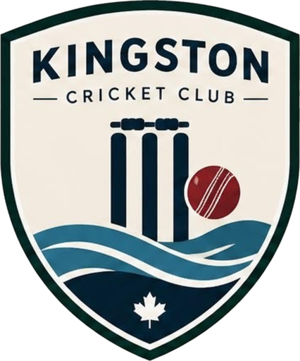

Privacy policy
Kingston CC app · Last updated 31 October 2026
Who we are
The Kingston CC app is run by Kingston Cricket Club (“the club”, “we”) for its Winter League squad. The club is responsible for the information described here. You can contact us at kcc@purelymail.com.
The short version
- If you just browse fixtures, results and stats, the app doesn’t ask for or store anything about you.
- Squad players with a login share their email address, name, cricket profile and availability replies with the club. If they turn on notifications, we also store a code that lets us send notifications to their phone.
- There are no adverts, no analytics and no tracking, and we never sell your information.
What we collect, and why
Your login
The captain creates a login for each squad player using their email address and a passcode. We use these only to sign you in. Your passcode is stored in a scrambled (hashed) form, so nobody at the club can read it.
Your player profile
The captain adds your name, playing role (such as batter or bowler), batting and bowling style, and whether you are captain or vice-captain. These appear in the squad, team sheets and stats.
Match records
After each game the club records the side, the result and each player’s scorecard: runs, balls faced, wickets, overs, catches and similar figures. These make up the club’s stats.
Availability replies
When you tell the captain whether you can play, we store your answer and when you gave it. The captain and club admins can see who is available so the side can be picked. Other players only see their own reply.
We also keep a record of each reply and every change to it, with when it was made and whether you or a club admin made it. A club admin can give or change a reply for you, for example if you tell the captain in person. Only club admins can see this record, and we use it to help pick sides fairly and answer questions about selection.
Notifications
If you turn on notifications, your phone gives the app a push token: a random code from Apple that lets us send notifications to that phone. We store it with your login and use it only to tell you about new games, replies closing soon, being picked, and games being cancelled or postponed. Notifications are delivered by Apple’s push notification service. We also note which notifications we’ve sent, so you don’t get the same one twice. Signing out removes your phone’s push token, and you can turn notifications off at any time in your iPhone’s Settings.
Technical information
Like any online service, our hosting provider receives your device’s IP address and basic request details when the app connects. These are kept in short-term logs for security and fault-finding, not to identify or track you.
Who can see it
- Anyone using the app, signed in or not, can see fixtures, results, team sheets, player names, profiles and stats. Treat these as public, like a club scorebook or noticeboard.
- Signed-in squad players can also see and change their own availability replies.
- The captain and club admins who run the app can see and manage all of the above, including everyone’s availability replies and logins.
- Nobody can see your passcode, and email addresses are never shown in the app.
Where it’s stored
The club’s data is hosted by Supabase, which acts as our service provider and only processes it on our behalf. On your phone, the app keeps your sign-in in the iOS Keychain so you stay signed in; signing out removes it.
Notifications are sent through Apple’s push notification service, which receives only your phone’s push token and the notification itself. We don’t use any other third-party services in the app. Tapping “Directions” opens your choice of Apple Maps, Google Maps or Waze, the WhatsApp link opens WhatsApp, and the club’s email address opens your email app; what those apps do is covered by their own privacy policies.
How long we keep it
We keep your login, profile and replies while you are in the squad. We keep your phone’s push token until you sign out, or until Apple tells us it’s no longer in use. Match records and stats are kept as part of the club’s history. If you leave the club or ask us to, we’ll delete your login and availability replies, and can remove your name from past records.
Your rights
You can ask us at any time to show you the information we hold about you, correct it, or delete it. Email kcc@purelymail.com from the address you sign in with and we’ll respond within 30 days. If you’re unhappy with how we’ve handled your information, you can complain to the Office of the Privacy Commissioner of Canada.
Children
The app is for adult squad players and isn’t aimed at children. We don’t knowingly create logins for anyone under 16 without a parent or guardian’s agreement.
Changes to this policy
If we change how the app uses your information, we’ll update this page and the date at the top, and tell the squad about significant changes.